When you're saying "music in December" to somebody from the Netherlands, there's a very likely chance that they'll think of the Top 2000. A yearly chosen list of songs that is played between Christmas and midnight December 31st. I've actually played with this data before. It was perhaps my 2nd serious personal project and I was still very new to d3. Since I sometimes see artists revisiting artwork they've done in the past to see how their style evolved (which I always love to see), I thought it would be fitting to try and to the same myself (in the sketch section you'll see I've had this idea for a few months already). So, 2 years since my previous attempt, I'm going to look at the Top 2000 again and visualize the insights.
Not to worry if you're not Dutch, the Top 2000 is probably 90% English songs, with Queen often on 1st place, and many Beatles, U2 and Michael Jackson songs, so the list should seem familiar to most of you.
The Top 2000 website thankfully shares an Excel file of the 2000 songs containing the name, artist and year of release. This year it was released on December 19th. However, I needed another important variable; the highest rank ever reached in the normal weekly charts. There are a few of these in the Netherlands, but I chose to go with the Top 40, since this has been going non-stop since 1965. But also because the Top 40 website seemed scrape-able. So I wrote a small scraper that would go through 50 years of charts lists and save the artist's name, song title, URL to the song's page and position. This data was then aggregated to make it unique per song (the URL of the song was the unique key) and save some extra info, such as the highest position ever reached and number of weeks in the Top 40.
Next came the tricky bit, matching those artists and songs to those in the Top 2000 list. Of course I first tried a merge on an exact match of artist and title. That connected about 60% of the songs. Browsing through the remaining songs I saw that sometimes one of the two lists was using more words than the other, such as John Lennon-Plastic Ono Band versus just John Lennon. So I also searched for partial matches between the lists, as long as all the words of one song and artist were contained in the other list. That helped match 10% more.
Then came the fuzzy part. Sometimes words are written slightly different, such as Don't stop 'til you get enough versus Don't stop 'till you get enough. Using R's stringdist package, I applied the "Full Damerau-Levenshtein" distance to compare titles and artists (it counts the number of deletions, insertions, substitutions, and transposition of adjacent characters necessary to turn b into a). However, I was quite strict and said that only 2 changes are allowed on both the title and artist to create a match (otherwise the song Bad from U2 could be turned into any other 3-letter song and 2-3 letter artist). Sadly, that only gave me 2.5% more matches. As a side note, I did have to quickly check all the matched songs after each step to take out a few wrong matches.
Almost 600 songs were still not matched. However, that's is not necessarily a bad thing, since not all songs made the Top 40. Number 3, Led Zeppelin with Stairway to Heaven for example, since he never released singles, only albums. But how to know which "unmatched" songs were meant to be unmatched, and which songs had actually appeared in the Top 40, but had failed to match? One final idea I applied had to do with the Tips of the week. Since ±1970 the music station airing the Top 40 also keeps a list of 20/30 tips; songs that aren't in the Top 40, but that the DJ's think will or should be. I therefore scraped that list as well for all available years and performed exactly the same steps as with the Top 40 list. This gave me 8% more matched songs for which I new for certain that they were never in the Top 40 (but they were tipped for it once).
For the remaining ±430 songs I just manually went through the list to look at artists or song titles that have long or odd names for which I thought the matching probably didn't work and therefore could be a Top 40 song, such as Andrea Bocelli & Sarah Brightman in the Top 2000 list versus Sarah Brightman & Andrea Bocelli in the Top 40. I still can't say for the remaining 380 songs how many of those did actually appear in the Top 40, but to be honest, after all the data processing and things I've learned and checked about the data along the way, I think it's less than 10%.
This spring I was in Juan Velasco's excellent workshop Information Graphics for Print and Online. Part of the workshop was to work out an infographic. And although my small team of 3 had written down about 40 possible ideas we were all intrigued by the Top 2000 songs. From experience with my previous attempt of visualizing this data I already knew that there was a very interesting shift happening in the most loved decade (of release) over the past years. Therefore, we choose to make that the general concept around which to base the different parts of the infographic.
The most recent list of 2000 songs would take center stage, visualized with a beeswarm plot idea which would group them around their year of release. Each circle (i.e. a song) would be sized according to their highest position in the Top 40 and colored according to their rank in the Top 2000. Some of these songs would then be highlighted with annotations, such as highest newcomer.
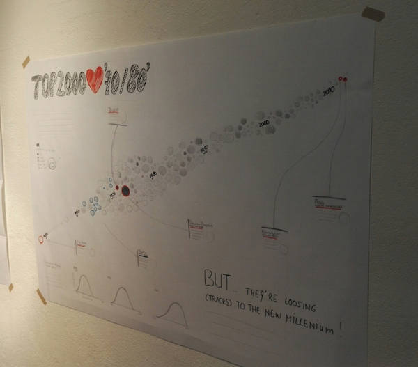Finally, in the bottom section there would be a few mini charts that would highlight the distribution of the chosen songs on year of release between the 1999, 2008 & 2016 editions of the Top 2000. This would highlight the fact that in 1999 the bulk of the songs were released in the 70's, but that this has slowly been moving to newer decades.
On the 2nd day of the workshop we also made a mobile version of this concept. This time resulting in a long scrollable Beeswarm plot where you could theoretically listen to bits of each song and see extra information.
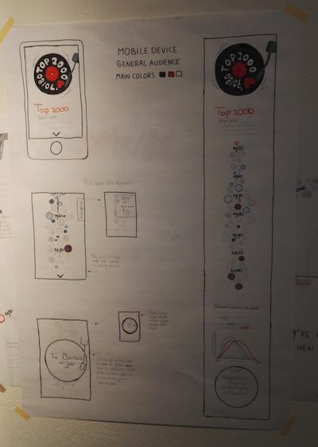Although I won't have time to build the mobile version I still wanted to show our concept ^_^
So! This month I'm finally going to focus on making a static poster. Nevertheless, I'm still going to use d3 to build the center piece (the beeswarm). Afterwards I'll pull it into Illustrator. The smaller histograms at the bottom I'll take straight from R into Illustrator, so a whole combination of tools :)
Especially with d3v4 it's become much easier to create beeswarm like plots, since we can now define forces that run across an x and/or y axis. In this case I needed a force along the horizontal axis that would cluster the songs based on their year of release. It still took me several iterations to figure out the right balance of forces in the x and y direction (plus an offset by the collision detection preventing circle overlap) so it filled the region nicely around the year axis, without the songs being moved away too far from their actual release year.
In my first attempts I had sized the circles according to their highest position reached in the Top 40 and colored them according to their position in the Top 2000. However, that created a lot of light grey circles of about the same size (see the image below). It just didn't look appealing.
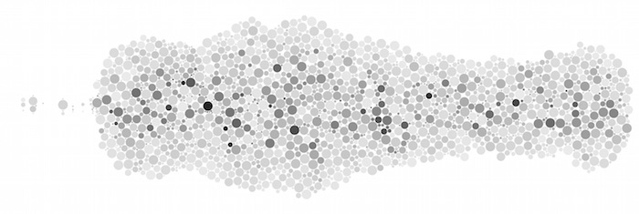So I switched those two scales (thus size was determined by the Top 2000 position and color was the Top 40 position) and that immediately gave a great improvement. I then started to mark out the circles (songs) that I wanted to annotate later. I wanted to keep the visual very black and white, inspired by the intense blackness of vinyl records, and only use red to mark songs that had something interesting about them and blue for the artist / band with most songs in the list. However, with David Bowie and Prince passing away this year I just had to make a note of that as well, so I added yellow and purple.
Since the top 10 songs from the list were the biggest circles, I thought it would look nice to mark these as small vinyl records (which is nothing more than a very small white circle on top of a small red circle).
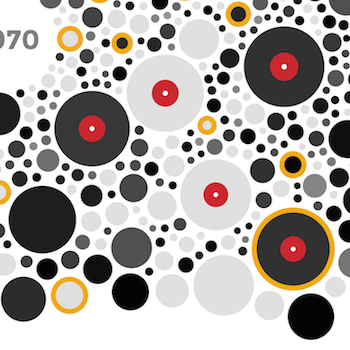Also, a small simple tip: you cannot do an outside stroke on SVGs. Thus when you stroke an element, the width of that stroke is centered on the outline of the element. However, in this case I wanted the grey circles to be visible for their entire radius, not having some part taken away by the stroke (which was very apparent in the small circles). So instead I plotted colored circles behind the grey circles that would be a few pixels bigger and thus mimicking a colored outside stroke. In the animated gif below the version with the "bigger" looking circles is using the background circles so that the grey circles keep their true radius)

With those relatively simple elements done and being sure I wouldn't change anything anymore, I used SVG Crowbar to save the beeswarm SVG and opened it up in Adobe Illustrator. There I turned it 25 degrees, just for a bit more interesting effect, and started placing annotations around it (based on an underlying grid to keep things nicely aligned in columns and rows). I used the data and the Top 2000 website to figure out some interesting facts, like Justin Timberlake having the highest ranking song from 2016.
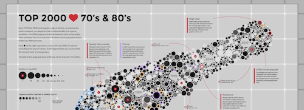After finishing the beeswarm / top part of the infographic I thought that maybe it would be nice to have a small interactive version as well, so you could hover over all the circles and see which song it was. So I put in 2-3 hours to getting the beeswarm in a decent state, with a tooltip and legend.
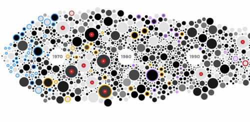I also wanted to touch on the fact that the distribution of the songs across release year has been changing towards the 90's & 00's. Since this was an added detail, a deeper insight into the data, I placed it below the main graphic. But it wasn't quite clear what visual form would convey the idea best. I already had the historic Top 2000 data from my previous visual on the topic from 2 years ago, so I appended the 2015 & 2016 data and started making some plots. That it should convey a histogram like approach was clear to me from the start, but should I smooth it down? How many years to show? Overlapping or in a small multiple fashion?

In the end I choose to go with a simple small multiple histogram of 4 editions across the past 18 years, but overplotted a smoothed density curve to make the general shape more easily comparable between the 4 charts. Below you can see what I took straight from R, created with the ggplot2 package (where I played with the color to also encode the height. Although eventually I made them all the same grey, since I didn't want the histograms to draw too much attention).
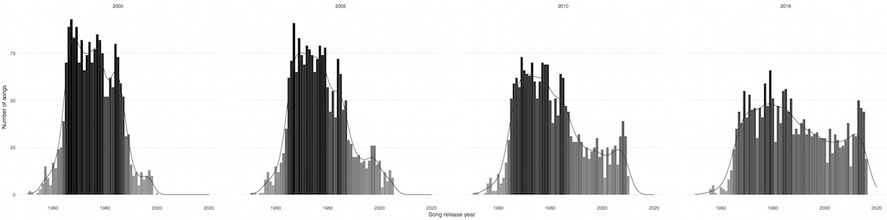The final infographic can be found below, and the interactive version is here. Besides an English version I also made a Dutch one, since the data is so related to Dutch pop culture.

Another reason why I decided to create an infographic is because I just didn't have that much time this month; I only finished the November visual for data sketches on December 7th, I had a small vacation to London planned (where I met Shirley again after 8 months YAY!) and we have the holidays at the end of December of course. And making a static visualization is always much much faster for me, even if it is partly based on something that I started in d3.
I think preparing and doing the data scraping & cleaning took about 20 hours, the ideation & sketching about 3 and the coding/creating about 20 - 30 hours (I keep telling myself to actually start keeping track, haha). After doing these static things I always remember how much I like making "printable" things :)

When we first agreed on Music for December, I felt quite lost; I didn't know what I wanted to do, other than perhaps something about K-pop. It wasn't until I was lamenting this lack of angle with Kenneth Ormandy that something he said stuck and I suddenly remembered DDR.
DDR was a huge part of my teenage life. I first saw it in 2001, at a friend of a friend's house. Since there were no arcades with DDR anywhere near where I grew up, I begged my parents to buy me a set. Easier said then done; there were absolutely no video games in our house at the time, so a DDR set meant not only the game itself, but the PS2 and the mat that came along with it. It took me two years to convince my parents, and the summer I got it, I was on it every day for hours. I was the type of kid that played the same song on the same difficulty over and over until I mastered it (with mastery defined as being able to clear the song at least twice in a row). I played it regularly until I left for college 5 years later.
(I should say though that I was never that great, and the highest I was ever able to clear was an 8/10 difficulty, and I most comfortably played songs that were 6 or 7/10.)
When I first went out looking, I was excited for the data out there; with hundreds of songs (thousands?), each with at least three difficulty levels and BPMs and maybe even the values in the Groove Radar (Stream, Voltage, Air, Freeze, and Chaos), that's potentially a lot of data. (By the way, never knew that pentagon was called a Groove Radar, I just learned it - thanks Google.) Never in my wildest dreams though, did I imagine all the steps from 645 songs just there, available. But then I came across the amazingness of DDR Freak and their step charts:
 And I started talking to my Computer Vision friend about how I (he) would go about getting the data out of that image. But Kenneth suggested I just email DDR Freak and ask if they had the raw data. And I was skeptical (the site had been largely inactive for at least the last five years) but I found an email (Jason Ko, founder of DDR Freak) and was like, hey why not? Never expecting a response.
And I started talking to my Computer Vision friend about how I (he) would go about getting the data out of that image. But Kenneth suggested I just email DDR Freak and ask if they had the raw data. And I was skeptical (the site had been largely inactive for at least the last five years) but I found an email (Jason Ko, founder of DDR Freak) and was like, hey why not? Never expecting a response.
And then Jason responds 18 (read: 18!!) minutes later with a zip of all the songs he had on hand. How awesome is he??
His zip had several different data formats, including .dwi (Dance with Intensity) and .stp (their own proprietary format). The .dwi files looked like this:
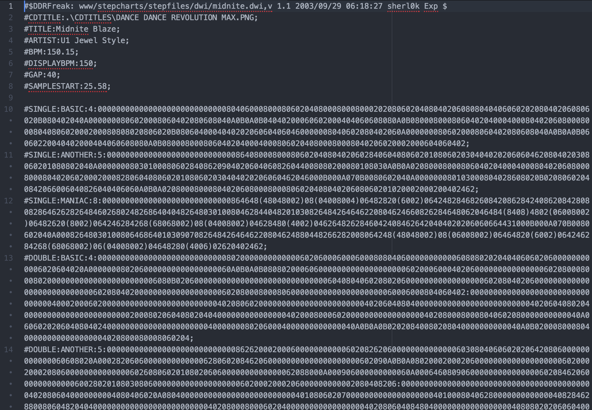
The file format is explained here, but at the very basic: 0 indicates no arrow, 2 is Down, 4 Left, 6 Right, and 8 Up. Each character defaults to 1/8 of a beat, but (...) indicates a 1/16 step, [...] a 1/24 step, and so on.
With that information, I was able to quickly reverse-engineer the .stp files (which I found to be a bit more reader-friendly, and ended up using):
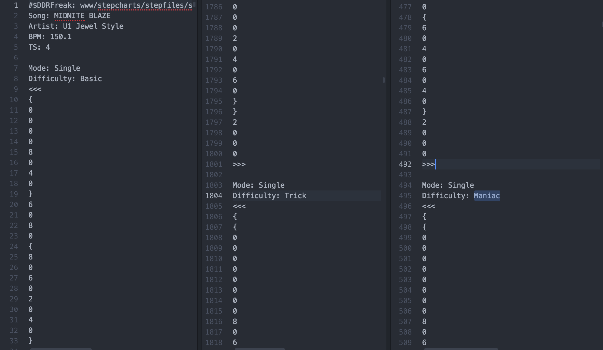
The only difference I found here is that instead of (...), {...} indicates 1/16, {{...}} indicates 1/24 (though I think in my code I assumed 1/32...), and so on.
Here is my (super straightforward) parsing code, and the resulting JSON file if you ever want to play with the data 😁✌️
Because I was traveling for majority of December, I wanted to do something relatively simple. I had seen teamLAB's Crystal Universe a few weeks earlier, and was incredibly inspired by its beauty: 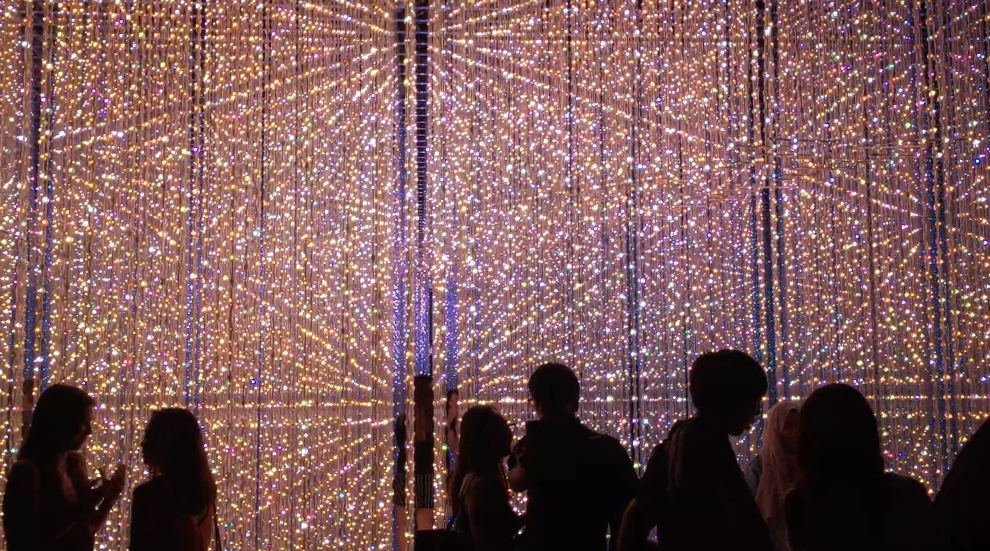 I wanted to do something similar for my December, where each step was a light, and I could animate it light up based on its position in the song. It started out promisingly, where I mapped the steps for each song's 2 modes (Single and Double) and 3 difficulty levels (Basic, Trick, Maniac) over time: 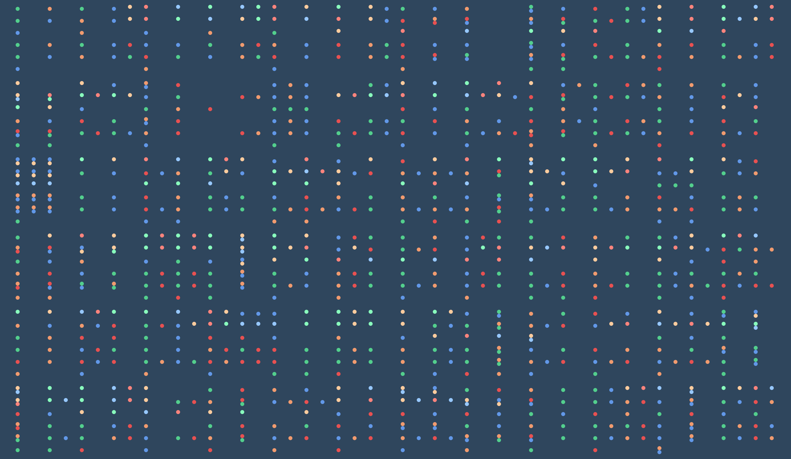 To distinguish different modes/difficulties from the next row of music, I went back to the music sheet/staff idea from November (you might have to click and expand the image to see the lines since they're so faint): 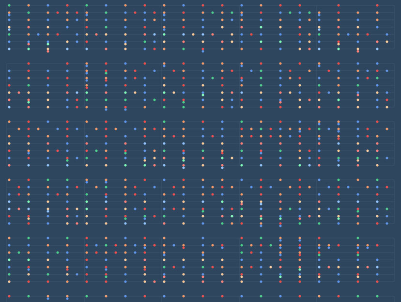 But then I got really stuck. Yes, with the staff lines I can now distinguish rows of modes/difficulties from the next row of steps over time. But it didn't seem to do me much good, and the steps were so spread apart that I couldn't seem to see the whole song on one screen and see if there were any interesting patterns. I also couldn't figure out how the rest of the interface would fit in, where people would browse and select songs to bring up this song view.
While still stuck, I went to sleep with only two goals for an interface in mind: I wanted each song to be compact, and I wanted the visual analogy for a song to be continuous. I woke up the next day with spirals on my mind, and I was convinced that it was the answer to my problems; spirals like circles were very compact, and a spiral was basically one long continuous line that I could map my steps to.
I giddily set about looking into the math behind spirals, and was super happy to find that for an Archimedean spiral (a spiral where the distance between each spiral branch is the same) the radius was simply the angle:
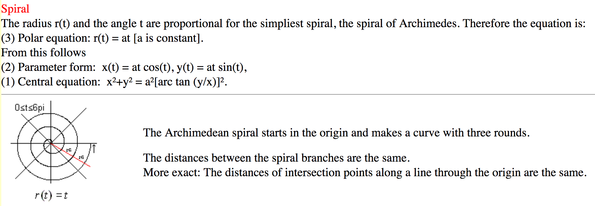
Until I realized that...if I used that formula, I would end up with something like this:
 When instead I wanted the points (the beats) to be equidistant along the length of the spiral, and realized that the problem wasn't as simple as I thought:
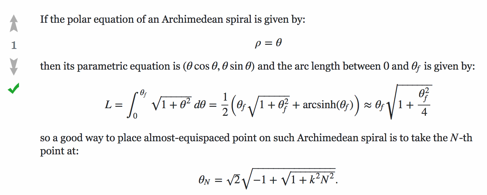
(StackExchange: Equation to place points equidistantly on an Archimedian Spiral using arc-length)
When instead I wanted the points (the beats) to be equidistant along the length of the spiral, and realized that the problem wasn't as simple as I thought:
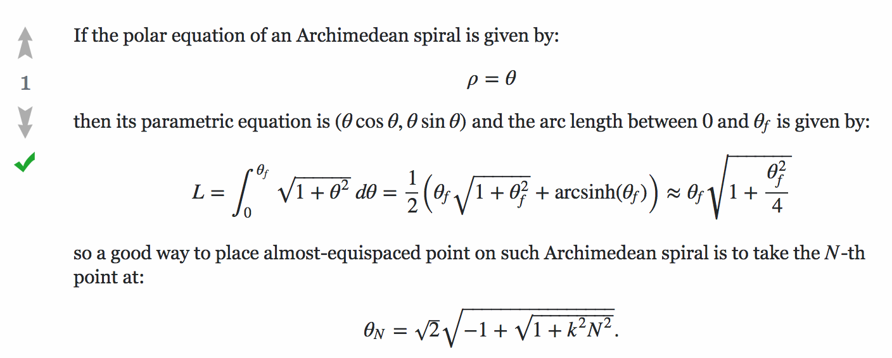
(StackExchange: Equation to place points equidistantly on an Archimedian Spiral using arc-length)
And bashed my head because it's been about a decade since I last touched an integral. I spent an hour scribbling in my notebook trying to figure out all the steps in between the equations, so that I could understand how the final equation was derived. No luck.
Then two miraculous things happened:
I then added legends for each song that also doubled as the filter (I originally had the legends up top that acted as a filter for ALL the songs, but found it completely unperformant, so switched to filters for EACH song): 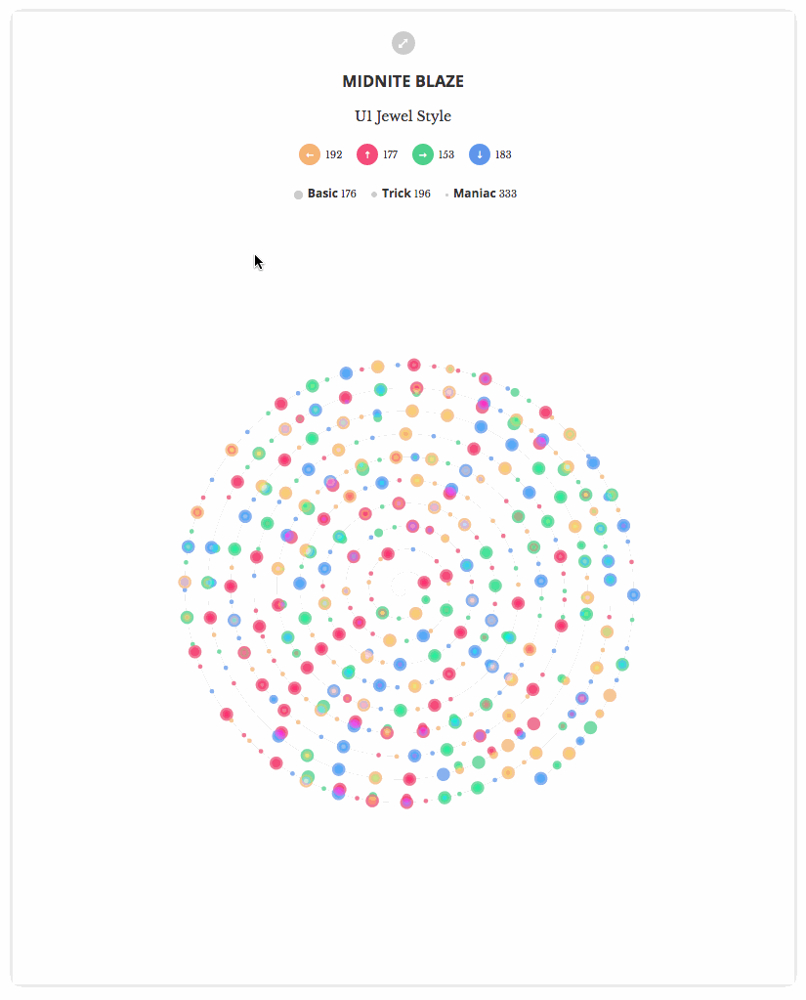 Here is the final: 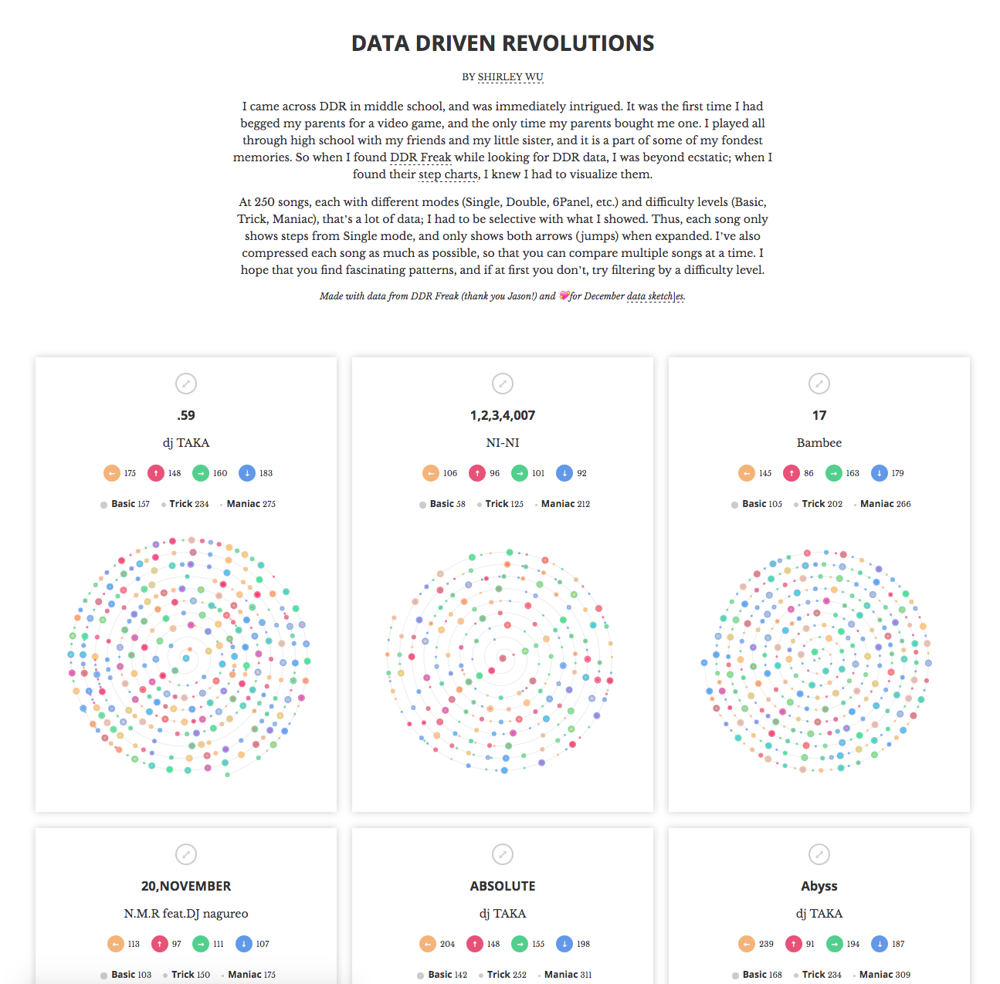 Overall, I'm happy with where I ended up given where I started. With the spiral, I can now compare multiple songs, so both the big spirals (long songs) and teeny spirals stand out. I can also see from a glance that some songs I used to love indeed had a lot of steps close together throughout the whole song with few breaks, so no wonder I was out of breadth all the time. Having said that, I'm not 100% satisfied; for the sake of compactness, I sacrificed being able to see at a glance patterns within a song. One of the funnest things about DDR is that a song will have many sets of steps that repeat throughout; with this viz, it's hard to find those. I'm not sure if, given enough time, I would have been able to find a visualization that could show both trends between songs, as well as patterns within songs.
Either way, my favorite part about this month isn't at all the process or what I ended up with, but rather the kindness of (almost) perfect strangers willing to give a helping hand proving that (some) people are awesome ✌️
{kind=link}
{kind=link}
{kind=link}
{kind=link}
{kind=link}
{kind=link}
{kind=link}
{kind=link}
{kind=link}
{kind=link}
{kind=link}
{kind=link}
{kind=link}
{kind=link}
{kind=link}
{kind=link}